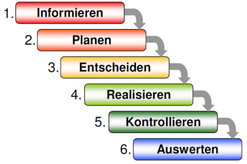

Wochenrückblick |
Lupe der Woche |
Reflexion |
|---|
| Tag | Tätigkeiten | Zeit |
|---|---|---|
| Montag 17.08.2020 |
|
|
| Dienstag 18.08.2020 |
|
|
| Mittwoch 19.08.2020 |
|
|
| Mittwoch 19.08.2020 |
|
|
In dieser ersten Arbeitswoche haben wir mit vielen spielerischen Aktivitäten die Namen der anderen Auszubildenden gelernt. Zum Beispiel mit dem Spiel LifeStyle, welches wir unter der Anleitung von Nadine und Bobby gespielt haben. Bei Bobby haben wir mit Tierfiguren unsere derzeitige Gefühlslage beschrieben und in einem zweiten Durchlauf die erwartete Situation anhand eines zweiten Tieres. Im Anschluss an die Assoziation mit den Tieren, durften wir von ausgewählten Mitlernenden positive Eigenschaften aufschreiben und diese dann mitteilen. Ausserdem konnten wir Jugendliche mit Ähnlichkeiten in unserem Leben suchen – anhand eines selbst geschriebenen Steckbriefes – damit wir schneller neue Leute kennenlernen.
Auch wurden wir unter Anleitung von Robin damit betraut, unsere Notebooks/Laptops einzurichten. Dazu gehörte das Einrichten einer WLAN Verbindung, des WebMail-Kontos sowie die Microsoft Applikation «Teams», welche uns den Arbeitsalltag vereinfachen, und zudem die schnelle und zuverlässige Kommunikation, sowie Auftragserteilung, gewährleisten soll. Das Anschliessen des Laptops an einen Bildschirm gehörte ebenfalls zu diesen Tätigkeiten.
Ein bisschen Bewegung und Ortskenntnisse gehören dazu, weshalb von den Berufsbildnern ein Postenlauf organisiert wurde, den wir in kleinen Gruppen absolvieren sollten. Die Route konnten wir im Team planen, die zu besuchenden Posten waren jedoch vorgegeben. Nach dem aufschlussreichen Postenlauf wurden wir damit beauftragt eine Präsentation vorzubereiten, in welcher wir die wichtigsten Erkenntnisse festhalten sollten. Nach eben jener genannten Präsentation spielten wir eine Runde Kahoot, um die Namen der anderen Auszubildenden im Büro festigen zu können. Im Anschluss hatten wir einen Block, in welchem es vor allem um die Erwartungen der Lernenden und des Ausbildungsbetriebes ging. Wir diskutierten diverse wichtige Themen, um eine erfolgreiche Zusammenarbeit gewährleisten zu können.
Wir haben jeden Tag Zeit erhalten, um am Arbeitsjournal arbeiten zu könnnen. Ausserdem haben wir in mehreren Gruppen Flipchart-Präsentationen vorbereitet, um die wichtigsten Aspekte des Leitfadens besser verstehen zu können und offene Fragen zu klären.
Bobby hat uns auch die Auszubildenden der oberen Lehrjahre vorgestellt, sowie deren Berufsbildner. Auch mit ihm haben wir den Verhaltenskodex der Noser Gruppe gelesen und offene Fragen geklärt.
Bobby hat uns mit einer selbstständigen Einführung ins Office beauftragt und wir haben mit der Bearbeitung der Einführung ins Office Programm «Word» begonnen.
Wir haben das ein Behauptungsspiel gespielt, bei welchem 2 richtige und eine falsche Behauptung aufgeschrieben wurden, dies hat uns wieder neue Informationen zu unseren Mitlernenden gegeben und hat zu vielen Lachern geführt. Ausserdem hat Robin uns eine Einführung ins binäre Zahlensystem gegeben und wir konnten einige kurze Aufgaben dazu lösen. Ausserdem haben wir selbstständig das Nutzungsreglement gelesen, die offenen Fragen geklärt und es dann unterschrieben, damit das KV die Unterlagen einscannen kann.
Um herauszufinden wie wichtig Kommunikation effektiv ist, haben wir in Zweiergruppen Tangram gespielt, dies sollte eine Vorbereitung auf die Arbeit mit Kunden sein, da es viele Fehler oder Unklarheiten geben kann.
| Die IPERKA-Methode, eine Methodik zur systematischen Bearbeitung von Aufträgen. Die IPERKA-Methode umfasst sechs Arbeitsschritte, welche vom Sammeln von Informationen bis hin zur Ausführung, Kontrolle und Auswertung alle Schritte beinhaltet. Im folgenden Text wird die IPERKA-Methodik näher erläutert und es wird auf jeden der sechs Schritte näher eingegangen. |  https://www.konstrukteur-in.ch/wp-content/uploads/iperka-600x400.jpg |
|
In dieser ersten Arbeitswoche durfte ich viele neue, großartige Leute kennenlernen und konnte bereits einen kleinen Personenkreis herausfiltern, mit dem ich den Hauptteil meiner Ausbildung gerne verbringen möchte. Ebenfalls vorstellen kann mich mir, dass mit der einen oder anderen Person auch privat Kontakt aufgebaut wird.
Im späteren Verlauf der Ausbildung und auch im Privatleben werde ich diese neuen Erkenntnisse (Office) sicher anwenden können und mir dadurch die Arbeit erleichtern. Bei weiteren Bewerbungen oder schriftlichen Arbeiten wird mir das neu erlangte Wissen eine professionellere Arbeitsweise ermöglichen.
Beim Arbeiten im Word, speziell mit den Formatvorlagen ist definitiv noch Verbesserungspotential da. Durch wiederholtes Arbeiten mit dieser Funktion sollte es mir jedoch möglich sein, auch mit diesem Tool effizient arbeiten zu können.